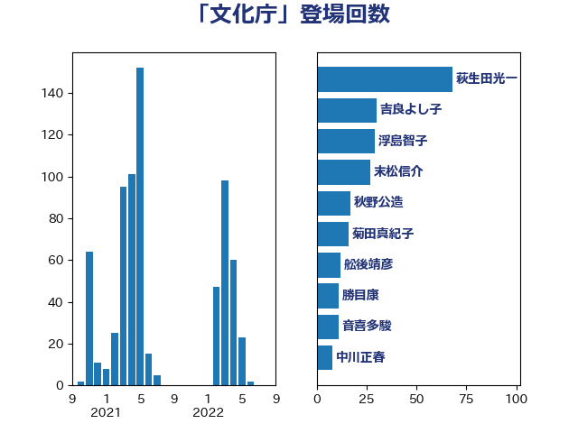

単語「文化庁」

| 萩生田光一 | 自由民主党 | 68 回 |
| 吉良よし子 | 日本共産党 | 30 回 |
| 浮島智子 | 公明党 | 29 回 |
| 末松信介 | 自由民主党 | 27 回 |
| 秋野公造 | 公明党 | 17 回 |
| 菊田真紀子 | 立憲民主党 | 16 回 |
| 舩後靖彦 | れいわ新選組 | 12 回 |
| 勝目康 | 自由民主党 | 11 回 |
| 音喜多駿 | 日本維新の会 | 11 回 |
| 中川正春 | 立憲民主党 | 8 回 |
| 坂本哲志 | 自由民主党 | 8 回 |
| 赤池誠章 | 自由民主党 | 8 回 |
| 横沢高徳 | 立憲民主党 | 7 回 |
| 宮本岳志 | 日本共産党 | 6 回 |
| 寺田学 | 立憲民主党 | 6 回 |
| 荒井優 | 立憲民主党 | 6 回 |
| 伊藤孝恵 | 国民民主党 | 5 回 |
| 徳永エリ | 立憲民主党 | 5 回 |
| 白石洋一 | 立憲民主党 | 5 回 |
| 穀田恵二 | 日本共産党 | 5 回 |
| 緒方林太郎 | 無所属 | 5 回 |
| 美延映夫 | 日本維新の会 | 5 回 |
| 西村康稔 | 自由民主党 | 5 回 |
| 谷田川元 | 立憲民主党 | 5 回 |
| 井野俊郎 | 自由民主党 | 4 回 |
| 佐々木さやか | 公明党 | 4 回 |
| 安江伸夫 | 公明党 | 4 回 |
| 義家弘介 | 自由民主党 | 4 回 |
| 井上哲士 | 日本共産党 | 3 回 |
| 今井絵理子 | 自由民主党 | 3 回 |
| 山田太郎 | 自由民主党 | 3 回 |
| 山谷えり子 | 自由民主党 | 3 回 |
| 岬麻紀 | 日本維新の会 | 3 回 |
| 務台俊介 | 自由民主党 | 2 回 |
| 古川元久 | 国民民主党 | 2 回 |
| 山本左近 | 自由民主党 | 2 回 |
| 岡本三成 | 公明党 | 2 回 |
| 梅村みずほ | 日本維新の会 | 2 回 |
| 浜田聡 | NHK党 | 2 回 |
| 田中英之 | 自由民主党 | 2 回 |
| 遠藤良太 | 日本維新の会 | 2 回 |
| 高木啓 | 自由民主党 | 2 回 |
| 高橋千鶴子 | 日本共産党 | 2 回 |
| あかま二郎 | 自由民主党 | 1 回 |
| 三谷英弘 | 自由民主党 | 1 回 |
| 中根一幸 | 自由民主党 | 1 回 |
| 中西健治 | 自由民主党 | 1 回 |
| 伊藤渉 | 公明党 | 1 回 |
| 加田裕之 | 自由民主党 | 1 回 |
| 古川禎久 | 自由民主党 | 1 回 |
| 吉川ゆうみ | 自由民主党 | 1 回 |
| 吉川元 | 立憲民主党 | 1 回 |
| 吉川沙織 | 立憲民主党 | 1 回 |
| 城内実 | 自由民主党 | 1 回 |
| 宮崎政久 | 自由民主党 | 1 回 |
| 小池晃 | 日本共産党 | 1 回 |
| 小泉進次郎 | 自由民主党 | 1 回 |
| 小里泰弘 | 自由民主党 | 1 回 |
| 山下貴司 | 自由民主党 | 1 回 |
| 山添拓 | 日本共産党 | 1 回 |
| 川田龍平 | 立憲民主党 | 1 回 |
| 平井卓也 | 自由民主党 | 1 回 |
| 後藤茂之 | 自由民主党 | 1 回 |
| 斉藤鉄夫 | 公明党 | 1 回 |
| 斎藤嘉隆 | 立憲民主党 | 1 回 |
| 杉本和巳 | 日本維新の会 | 1 回 |
| 杉田水脈 | 自由民主党 | 1 回 |
| 柴田巧 | 日本維新の会 | 1 回 |
| 根本匠 | 自由民主党 | 1 回 |
| 河西宏一 | 公明党 | 1 回 |
| 牧義夫 | 立憲民主党 | 1 回 |
| 玉木雄一郎 | 国民民主党 | 1 回 |
| 笹川博義 | 自由民主党 | 1 回 |
| 紙智子 | 日本共産党 | 1 回 |
| 西岡秀子 | 国民民主党 | 1 回 |
| 足立康史 | 日本維新の会 | 1 回 |
| 近藤和也 | 立憲民主党 | 1 回 |
| 金田勝年 | 自由民主党 | 1 回 |
| 鈴木敦 | 国民民主党 | 1 回 |
| 関芳弘 | 自由民主党 | 1 回 |
| 阿部司 | 日本維新の会 | 1 回 |
| 青山周平 | 自由民主党 | 1 回 |
| 高橋光男 | 公明党 | 1 回 |
| 鰐淵洋子 | 公明党 | 1 回 |